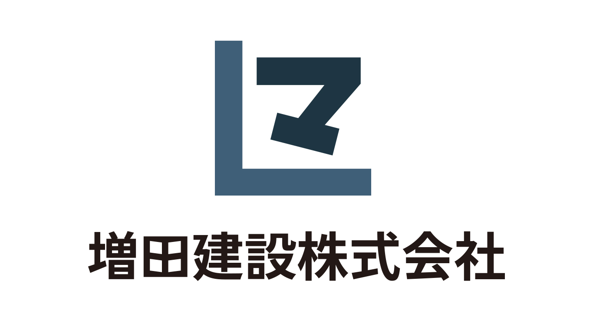
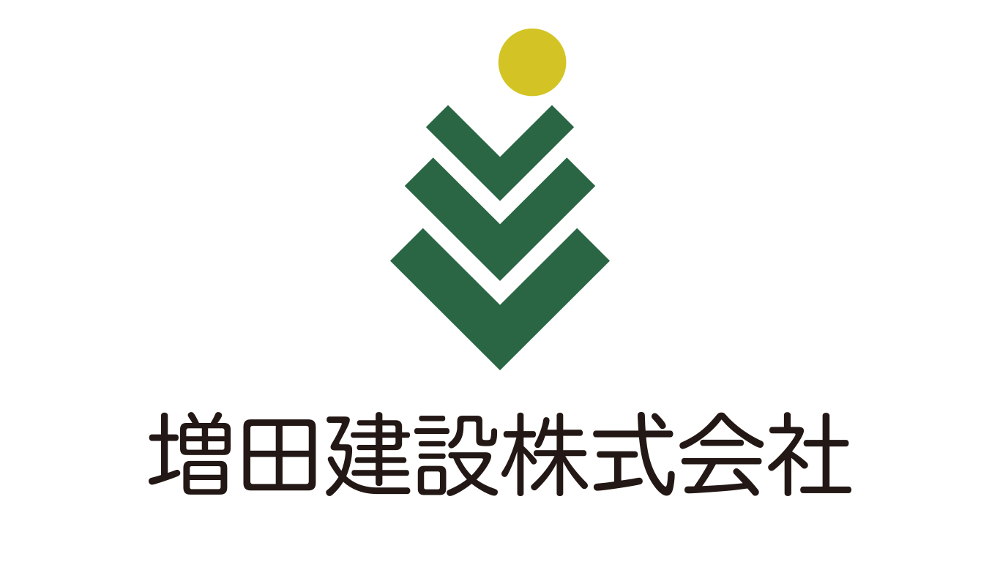
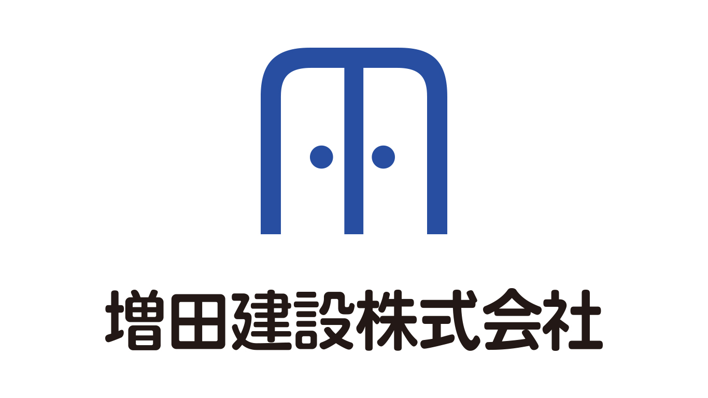

株式会社増田建設のロゴ
1案目

コンセプト
信頼と誠実さ
ターゲット
30代後半以上の核家族世帯
デザインについて
「建設会社に必要な要素といえばお客様からの信頼や誠実さだと考えました。なのでそういったイメージをブルー系のコーポレートカラーを使用してロゴタイプとロゴマークを作成しました。ロゴマークのデザインは増田建設の頭文字の「マ」を使って、少しポップな雰囲気を出しつつも、L 字の枠を下に置くことで、増田建設がお客様の生活の土台を作り、支えるという意味合いも含めて作りました。
担当
ワイヤーフレーム制作（0.5時間）、デザイン（3時間）
2案目

コンセプト
環境にも優しい建設会社
ターゲット
30代後半以上の核家族世帯
デザインについて
森林など環境に優しくをコンセプトにしている建設会社なので、緑と黄色をコーポレートカラーにしています。ロゴマークも木と太陽をモチーフとしたデザインにしています。ロゴタイプも堅苦しさが出すぎないような書体を使用して、お客様に身近に感じてもらえるようにしています。
担当
ワイヤーフレーム制作（0.5時間）、デザイン（2時間）
3案目

サイトの目的
お客様に身近な建設会社
ターゲット
20代後半～30代の若い世代の家族世帯
デザインについて
誠実さと親しみやすさがコンセプトの会社なので、コーポレートカラーはそれを表すようなブルーを設定しました。ロゴマークは増田建設の頭文字「M」とお客様の新たな門出の扉となる意味で「M」をベースに扉をモチーフにしたロゴマークをデザインしました。ロゴタイプも丸みを帯びたゴシック体を使用することで、建設会社の堅苦しいイメージを軽減して柔らかい印象を与えることを意識しました。
担当
ワイヤーフレーム制作（0.5時間）、デザイン（1.5時間）